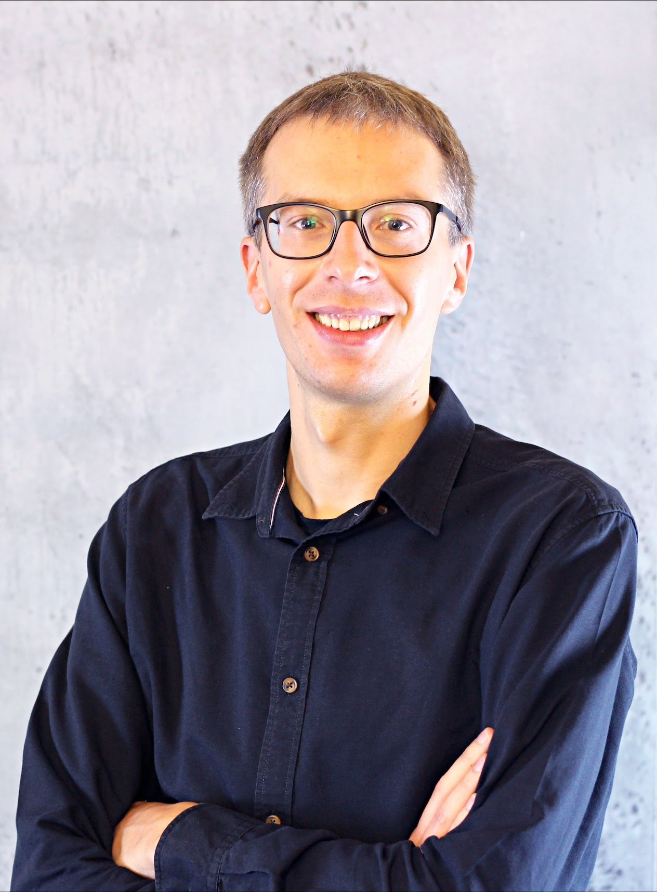

E-mail: dennis.ulbrich@uni-muenster.de
Office: Orléans-Ring 10, 48149 Münster, Room 130.023
Beforehand, I did my PhD (Dr. rer. nat. in Mathematics) at the University of Bremen supervised by Prof. J. Rademacher and Prof. M. Keßeböhmer.
Journal of Dynamics and Differential Equations, Springer, 2021, online first [DOI]
Ergodic Theory and Dynamical Systems, Cambridge University Press, 41, 2020, no. 5., 1397-1430 [DOI]
Dissertation, 2021 [DOI]

© DU 2023